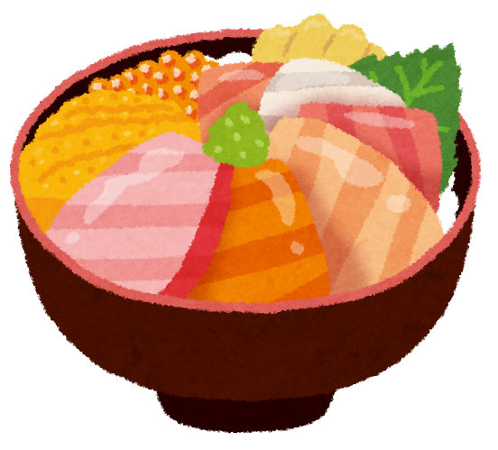
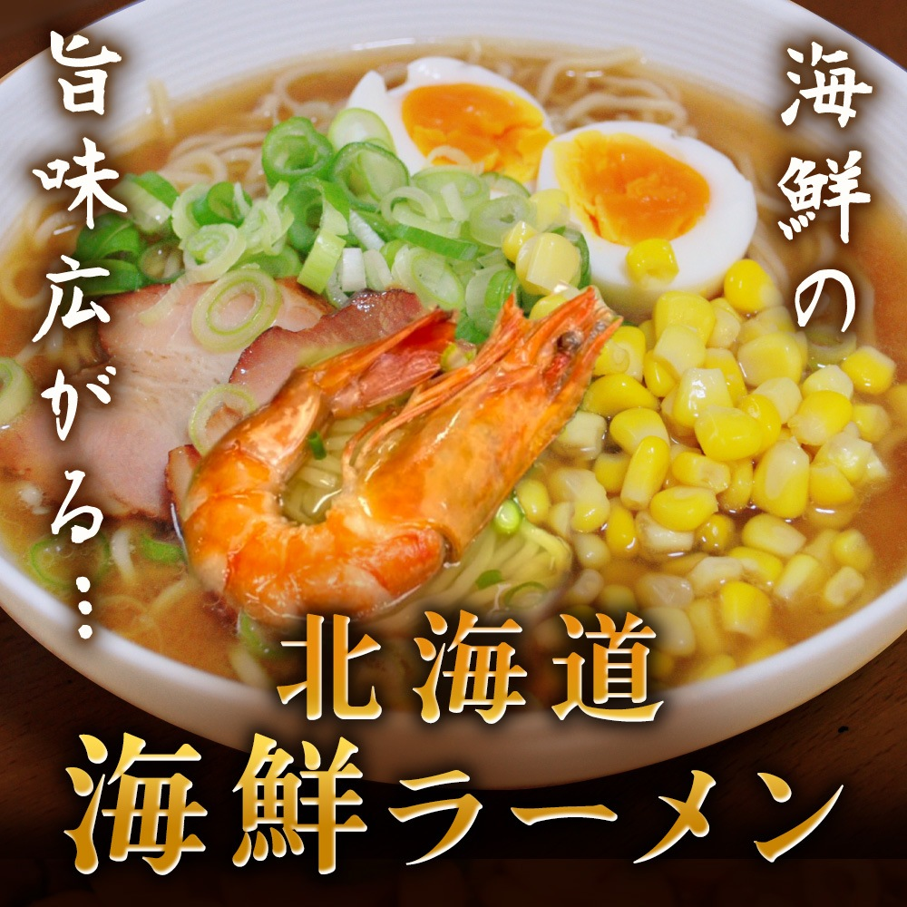

Aya's Hokkaido Food Ranking - Best 3!
No.1 - Ice Cream

Hokkaido is famous for its ice cream stands, which you can find on nearly every block, especially in tourist areas. These stands offer rich and creamy ice cream made from fresh Hokkaido milk, featuring unique flavors like sweet corn, lavender, and seasonal fruits. It's a great way to enjoy local flavors while taking in the beautiful scenery!
No.2 - Kaisendon
Kaisendon is a delicious seafood rice bowl from Hokkaido, featuring a variety of fresh seafood like salmon, sea urchin, and scallops, sourced from the region's cold waters. Served on a bed of warm, seasoned rice, it's often accompanied by soy sauce and wasabi for added flavor. Not only is it tasty, but it's also a visual delight with vibrant colors and textures.
No.3 - Ramen
Hokkaido ramen is renowned for its rich flavors and hearty broth, often featuring miso as a base. The region's cold climate makes it a perfect spot for this warming dish. Common toppings include tender slices of pork, corn, butter, green onions, and bean sprouts. Sapporo, the capital, is particularly famous for its miso ramen, served with thick, wavy noodles that hold the broth well. It's a must-try for anyone visiting Hokkaido!